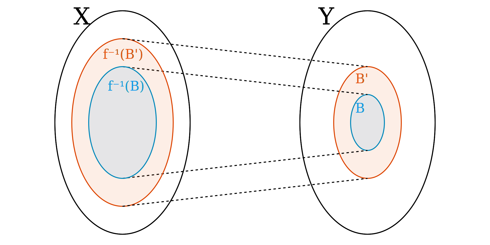

Throughout this document, \(X\) and \(Y\) are sets, \(f\) is a function \(X \to Y\). Additionally, \(A, A' \subseteq X\), and \(B, B' \subseteq Y\).
\(f(A)\) denotes the direct image, that is, $$f(A) = \left\{ y \in Y : \exists x \in A. \; f(x) = y \right\},$$
and \(f^{-1}(B)\) denotes the inverse image, that is, $$f^{-1}(B) = \left\{ x \in X : f(x) \in B \right\}.$$
| if and only if | ||
| $$\color{blue}{ f(A) } \subseteq \color{red}{ B }$$ | $$\Leftrightarrow$$ | $$\color{blue}{ A } \subseteq \color{red}{ f^{-1}(B) }$$ |
| $$\color{blue}{ A } \subseteq \color{red}{ A' }$$ | $$\Rightarrow$$ | $$\color{blue}{ f(A) } \subseteq \color{red}{ f(A') }$$ |
|  | ||
| $$\color{blue}{ f^{-1}(B) } \subseteq \color{red}{ f^{-1}(B') }$$ | $$\Leftarrow$$ | $$\color{blue}{ B } \subseteq \color{red}{ B' }$$ |